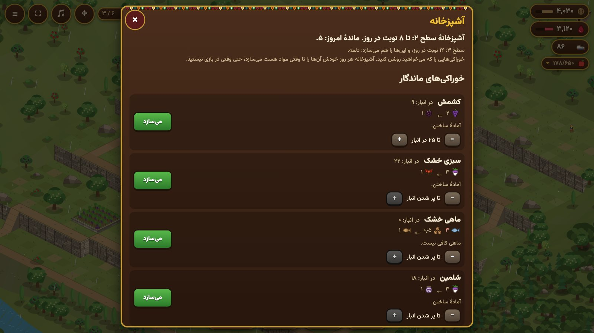

کالا و خوراک
گردو، آب انار، کلاش و چهار میوه کالاهای بازرگانی روستا هستند. بقیه، آذوقهٔ زمستانیِ خانواده است: خوراک، علوفهٔ دام و هیزم. هر گونه خوراک جای خودش را در انبار دارد؛ انبار آذوقه جای بیشتری میدهد. برخی خوراکها هر روز کمی خراب میشوند، پس اول آنها را بخورید یا نگهدارشان کنید.

کالاهای بازرگانی
| کالا | به چه کار میآید | برای هر کلاش | |
|---|---|---|---|
| گردو | پول ساختوساز | ۲۵ | |
| آب انار | نیروها را آموزش میدهد | ۲۵ | |
| کلاش | ویژه: ساخت را همین الان تمام میکند | – | |
| انگور | میوهٔ بازرگانی | ۸ | |
| گلابی | میوهٔ بازرگانی | ۸ | |
| توت | میوهٔ بازرگانی | ۸ | |
| انجیر | میوهٔ بازرگانی | ۶ | |
| پشم | هوار: زره نمدی برای نیروها | ۶ | |
| لبنیات | هوار: آموزش ارزانتر در تابستان | ۶ |
خوراک زمستان
«سیر میکند» یعنی هر واحد چند روزِ یک نفر را سیر میکند. خانواده به این ترتیب میخورد: اول آنچه زودتر خراب میشود، گندم آخر از همه (بذر نگه داشته میشود).
| خوراک | دربارهٔ آن | سیر میکند | خرابی روزانه | برای هر کلاش | |
|---|---|---|---|---|---|
| ماهی | از سیروان گرفته میشود؛ زود خراب میشود مگر خشک شود | ۰٫۸ | ۳۰٪ | ۶ | |
| سبزی تازه | تازه از باغچه؛ زود خراب میشود | ۰٫۳ | ۱۵٪ | ۱۵ | |
| تخممرغ | خوراک تازه. هر روز یک دهم آن خراب میشود | ۰٫۲ | ۱۰٪ | ۲۰ | |
| کره | خوراک زمستان از مَشک | ۱٫۵ | ۱٪ | ۴ | |
| پنیر | خوراک زمستان از لبنیاتخانه | ۱ | خراب نمیشود | ۵ | |
| سیراج | دلمهٔ نرمی که از جوشاندن و صاف کردن دوغ میماند؛ با عسل، کره یا روغن حیوانی خورده میشود | ۱ | خراب نمیشود | ۵ | |
| کشک | دوغ خشکشده: تمام زمستان میماند | ۱ | خراب نمیشود | ۵ | |
| دوینه | ماست و گندم که تابستان زیر آفتاب خشک میشود (ترخینه) | ۱٫۵ | خراب نمیشود | ۴ | |
| شلمین | شلغم ترشیشده، در فصل خشک | ۰٫۸ | خراب نمیشود | ۶ | |
| میوهٔ خشک | میوهای که تابستان و پاییز روی بام خشک شده | ۰٫۶ | خراب نمیشود | ۸ | |
| کشمش | انگوری که روی بام خشک شده | ۰٫۸ | خراب نمیشود | ۶ | |
| سبزی خشک | گوجه و سبزی خشک برای دلمه | ۰٫۵ | خراب نمیشود | ۸ | |
| ماهی خشک | ماهی خشکشده و دودی در تابستان: تا زمستان میماند | ۱٫۲ | خراب نمیشود | ۴ | |
| بادام | بادام باغ | ۱ | خراب نمیشود | ۶ | |
| دوشاو | شیرهٔ توت | ۱٫۲ | خراب نمیشود | ۴ | |
| عسل | از کندوها | ۱٫۲ | خراب نمیشود | ۴ | |
| روغن حیوانی | کرهٔ پخته: تمام زمستان میماند | ۲ | خراب نمیشود | ۳ | |
| گوشت قورمه | پاییز پخته میشود و در روغن میماند | ۲ | خراب نمیشود | ۲ | |
| برنج | پیش از بستهشدن گردنه از پاییندست خریده میشود | ۱ | خراب نمیشود | ۱۰ | |
| غله | نان زمستان و بذر بهار | ۱ | خراب نمیشود | ۱۲ |
آشپزخانه

خوراک زمستان در آشپزخانه درست میشود (فروشگاه، مزرعه و آذوقه؛ روستای تازه یکی دارد). روی آشپزخانه بزنید و سفارشهای آشپزخانه را باز کنید، یا از دکمهٔ پنل انبار بروید. خوراکیهایی را که میخواهید روشن کنید: آشپزخانه هر روز خودش آنها را تا وقتی مواد هست میسازد، حتی وقتی در بازی نیستید. در سطحهای ۱ / ۲ / ۳ تا ۴ / ۸ / ۱۴ نوبت در روز میسازد و خوراکیهای سفارششده را به نوبت درست میکند. برای هر خوراکی میتوانید اندازهای بگذارید که آنجا بایستد تا همهٔ مواد مصرف نشود. سطح بالاتر خوراکیهای بیشتری میسازد.
| خوراک | سطح آشپزخانه | هر نوبت میبرد | میدهد | چه وقت |
|---|---|---|---|---|
| کشمش | ۱ | انگور × ۲ | کشمش × ۱ | تابستان, پاییز |
| سبزی خشک | ۱ | سبزی تازه × ۳ | سبزی خشک × ۱ | تابستان, پاییز |
| ماهی خشک | ۱ | ماهی × ۳, هیزم × ۰٫۵ | ماهی خشک × ۱ | تابستان, پاییز |
| شلمین | ۲ | سبزی تازه × ۳ | شلمین × ۱ | تابستان, پاییز |
| روغن حیوانی | ۲ | کره × ۲, هیزم × ۰٫۵ | روغن حیوانی × ۱٫۶ | همهٔ سال |
| دوشاو | ۲ | توت × ۴, هیزم × ۱ | دوشاو × ۱ | تابستان |
غذاهای زمستان
در هر روز زمستان آشپزخانه غذاهایی را که روشن است و آذوقه اجازه میدهد میپزد و اهل خانه همان روز میخورند. هر دیگ پخته ۲۵٪ بیشتر از مواد خامش سیر میکند، و خانواده روزی دستکم ۲ غذای گوناگون میخواهد: با کمتر از آن، روز سادهای است و اهل خانه ضعیفتر میشوند. آنچه غذاها نرسانند، خام از انبار خورده میشود.
| غذا | سطح آشپزخانه | هر دیگ میبرد | سیر میکند (نفر-روز) |
|---|---|---|---|
| آش دوینه | ۱ | دوینه × ۱ | ۱٫۹ |
| کره و عسل | ۱ | کره یا روغن حیوانی × ۰٫۵, عسل × ۰٫۵ | ۱٫۷ |
| پەتلە | ۱ | غله × ۱, کره یا روغن حیوانی یا کشک × ۰٫۲۵ | ۱٫۷ |
| سیراج | ۲ | سیراج × ۱, عسل یا کره یا روغن حیوانی × ۰٫۲۵ | ۱٫۶ |
| دوشاو و روغن | ۲ | دوشاو × ۰٫۵, روغن حیوانی × ۰٫۵ | ۲ |
| پلو سیاه | ۲ | برنج × ۱, دوشاو × ۰٫۵ | ۲ |
| دلمه | ۳ | سبزی خشک × ۱, برنج × ۱, گوشت قورمه × ۰٫۵ | ۳٫۱ |
علوفه و هیزم
| کالا | دربارهٔ آن | برای هر کلاش | |
|---|---|---|---|
| لو | گیاه کوهستانی که آخر تابستان جمع میشود: خوراک زمستان گله | ۱۵ | |
| کاه | کاهِ گندمِ خرمن: علوفهٔ زمستان، کممایهتر از لو | ۲۰ | |
| برگ | برگ و شاخهٔ توت: روزی کمی؛ زیادش میتواند بزی را بکشد | ۲۰ | |
| هیزم | خانه را گرم نگه میدارد. سرگین گله هم سوخت است | ۱۵ |
خانواده در زمستان روزی ۳ هیزم میسوزاند و در روزهای برفگیر دو برابر. بی ساختمان، جا برای ۱۰۰ از هر خوراک، ۵۰ علوفه و ۱۰۰ هیزم هست.